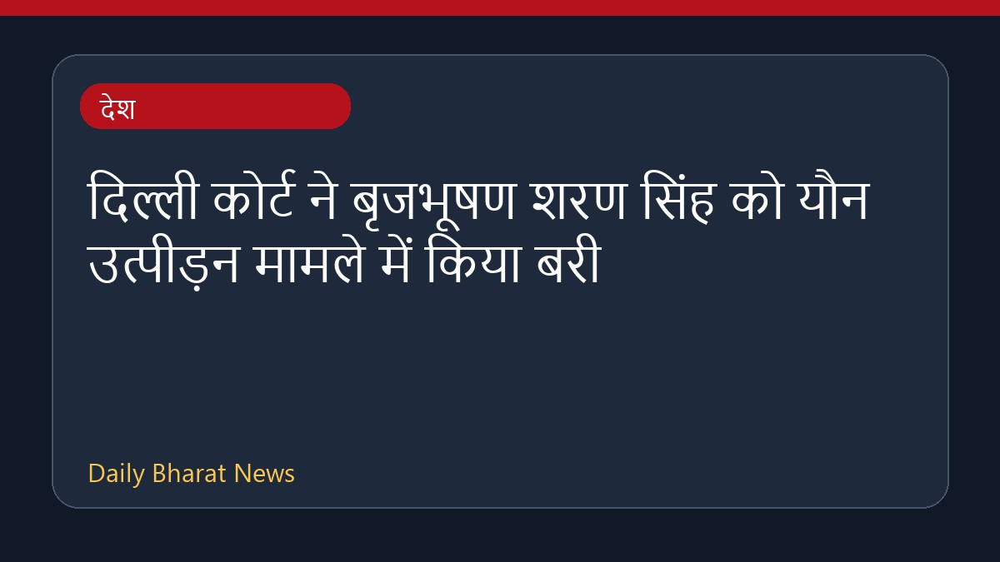

दिल्ली कोर्ट ने बृजभूषण शरण सिंह को यौन उत्पीड़न मामले में किया बरी

दिल्ली की एक अदालत ने महिला पहलवानों द्वारा दर्ज कराए गए यौन उत्पीड़न के मामले में कुश्ती महासंघ के पूर्व प्रमुख बृजभूषण शरण सिंह और विनोद तात्या को बरी कर दिया है। इस फैसले के बाद राजनीतिक हलकों में प्रतिक्रियाएं सामने आई हैं। महाराष्ट्र कांग्रेस ने सरकार की आलोचना की है। वहीं, पहलवान विनेश फोगट ने कहा है कि पहलवान इस फैसले के खिलाफ उच्च न्यायालय में अपील करेंगे और अपनी कानूनी लड़ाई जारी रखेंगे। अदालत के इस निर्णय से जुड़े घटनाक्रम पर विभिन्न पक्षों की ओर से बयान सामने आ रहे हैं और मामले में आगे की कानूनी प्रक्रिया पर चर्चा की जा रही है।
मूल स्रोत: India News Sources
BREAKING| Delhi Court Acquits Brij Bhushan Sharan Singh In Wrestlers' Sexual Harassment Case - Live Law ↗
BREAKING| Delhi Court Acquits Brij Bhushan Sharan Singh In Wrestlers' Sexual Harassment Case - Live Law ↗